CRYPTFORGE · 08 OCTOBER 2026 · ACTUAL UNITY CAPTURES
One court. A grouped workshop. Smaller stone.
Three changes in one playable package: four-unit north chamfers, the stock station beside the crane, and smaller paving with quieter joints. The six-unit south chamfers remain. These are actual game renders, not a new concept painting.
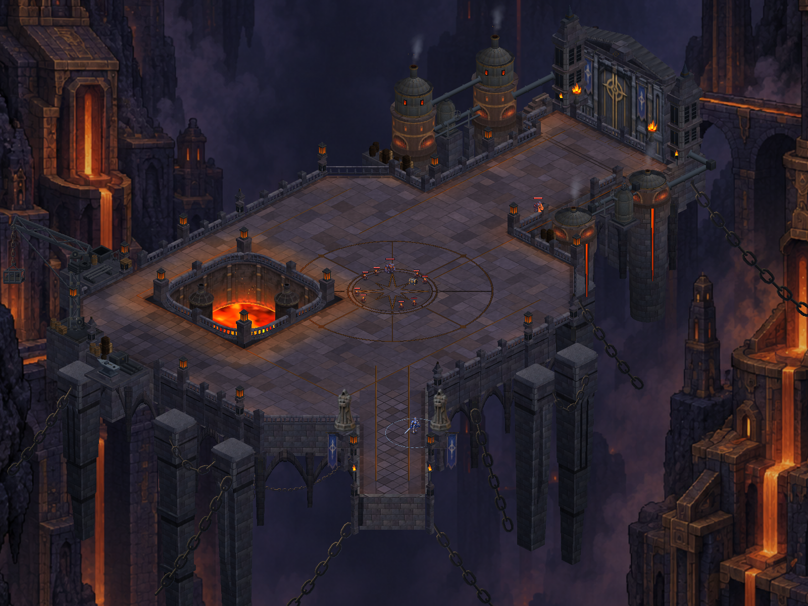
Current layout — north corners and grouped workshop.
Phone-camera paving comparison
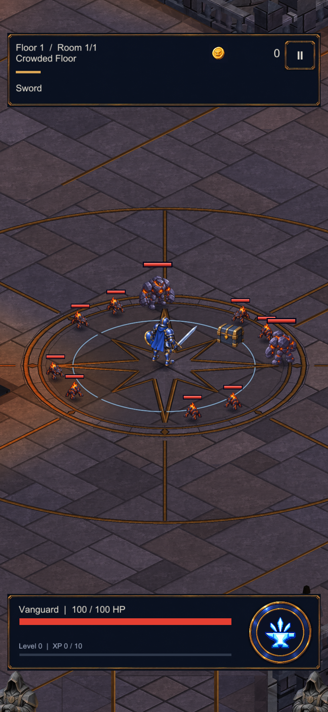
Before — broader flags and stronger joints.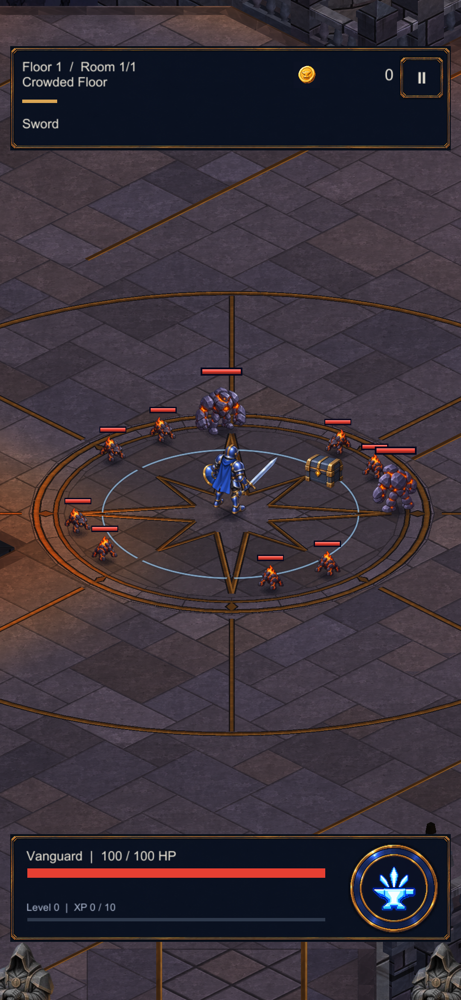
After — smaller flags; the same texture and gameplay camera.Workshop grouping
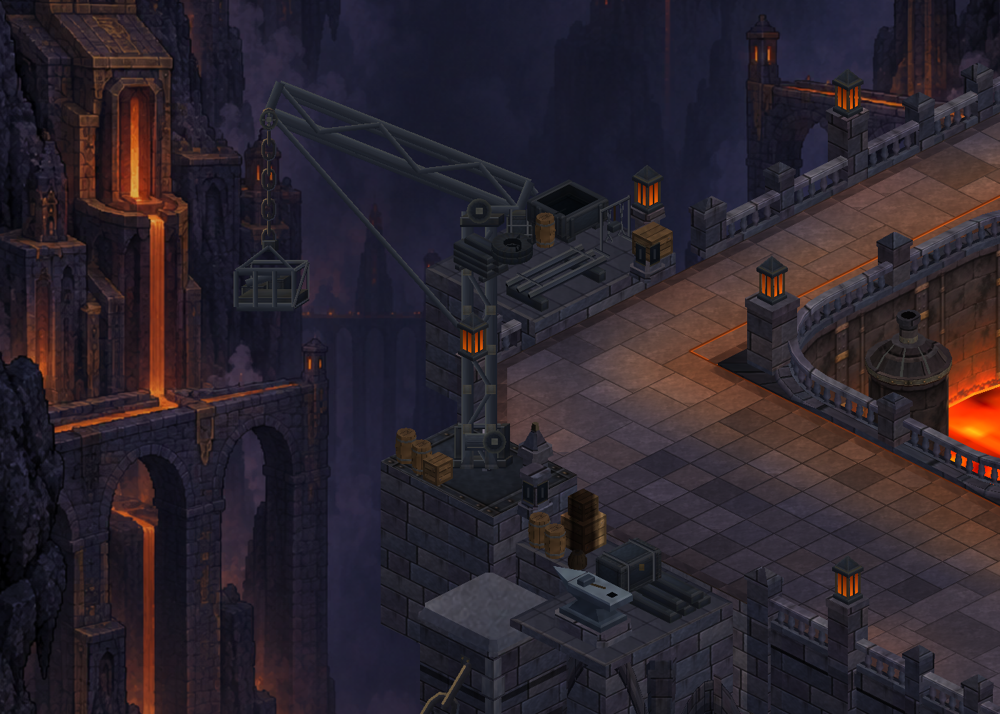
Reserve stock, basin, pipes and tools share the northwest work area. Existing anvil and crane remain; stock platform, depth footprint, clutter and soot moved together.
Real map traversal
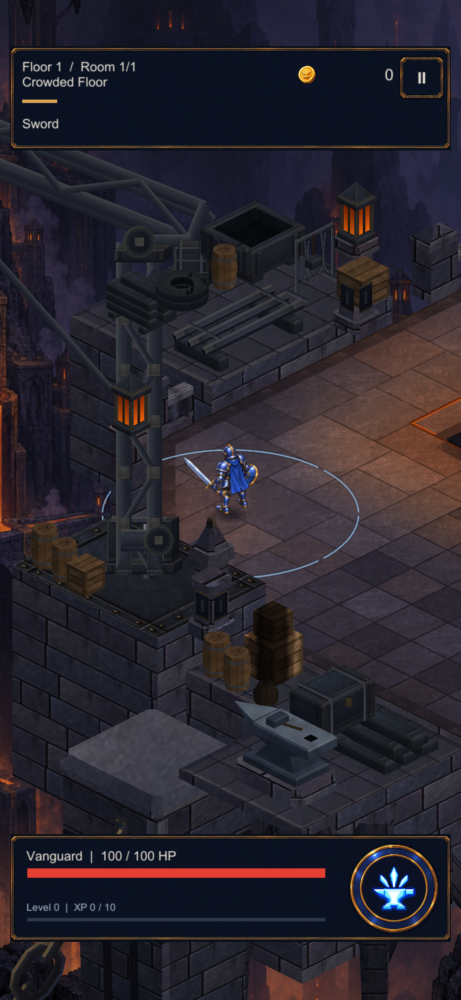
Northwest chamfer.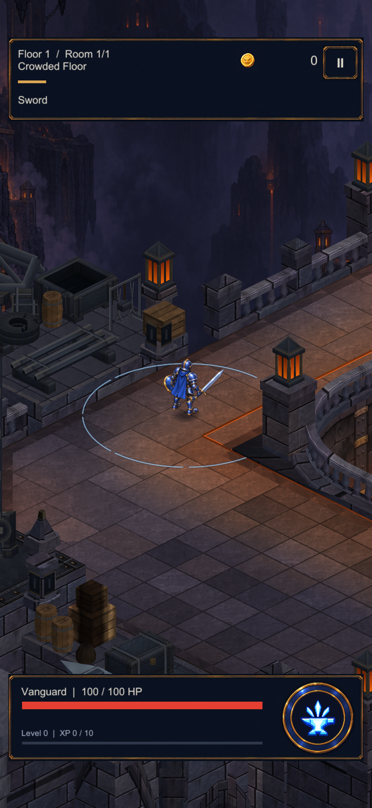
Workshop front.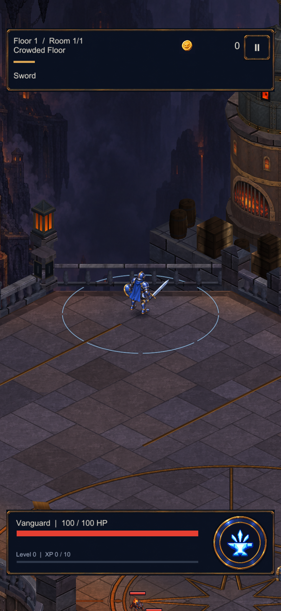
Northeast chamfer.Installed on S23
The installed APK hash matches the tested build. Guarded north traversal and ordinary gameplay/loot were inspected. Profile and original development settings are unchanged; temporary diagnostic removed.
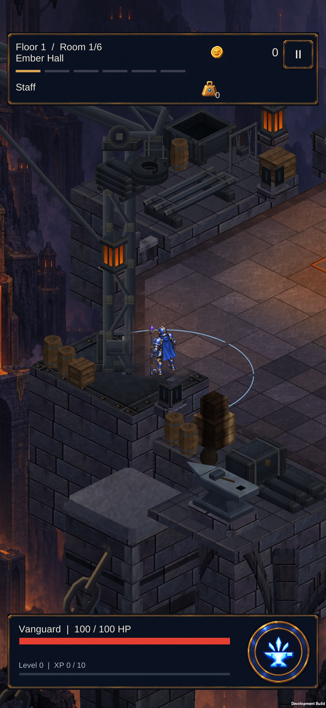
S23 — crane and grouped workshop.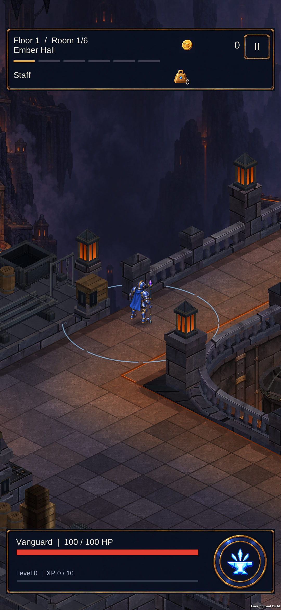
S23 — stock front and clear north loop.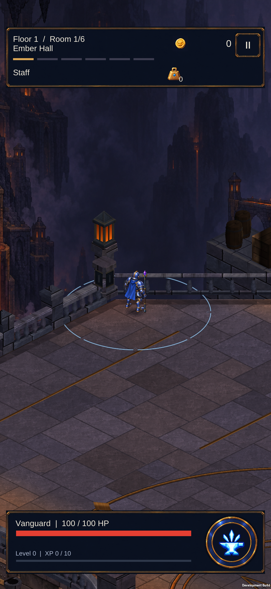
S23 — northeast chamfer and character clearance.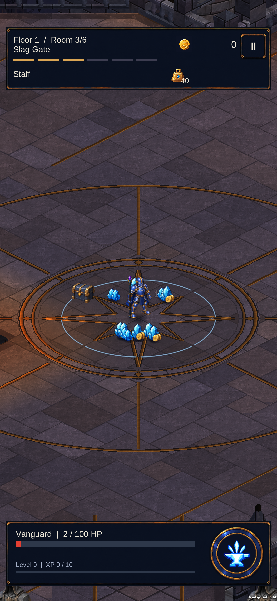
S23 — ordinary Staff gameplay and loot over the smaller flags.Reference and remaining work
The broad court, left furnace pit, south bridge and northeast gate remain the reference anchors. True walkable elevation at the gate and the reference's richer painted surface/light character remain open. This package does not finish the reference map.
Approved concept reference · Full-resolution game map · Verification and device record · Mesh budget
18 region renderers, 92,951 vertices (+2,871 from the preceding package). Largest mesh: 27,023 vertices. No new material, texture or update loop. These counts are not a device FPS benchmark.